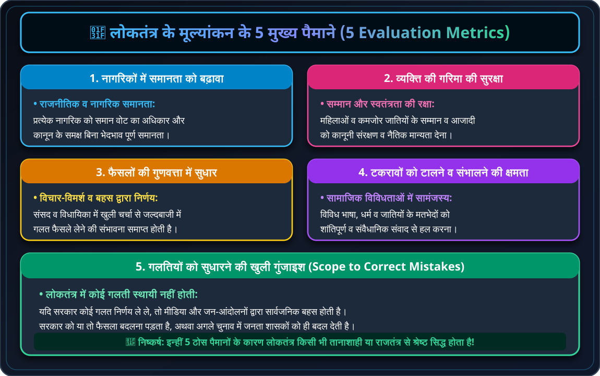
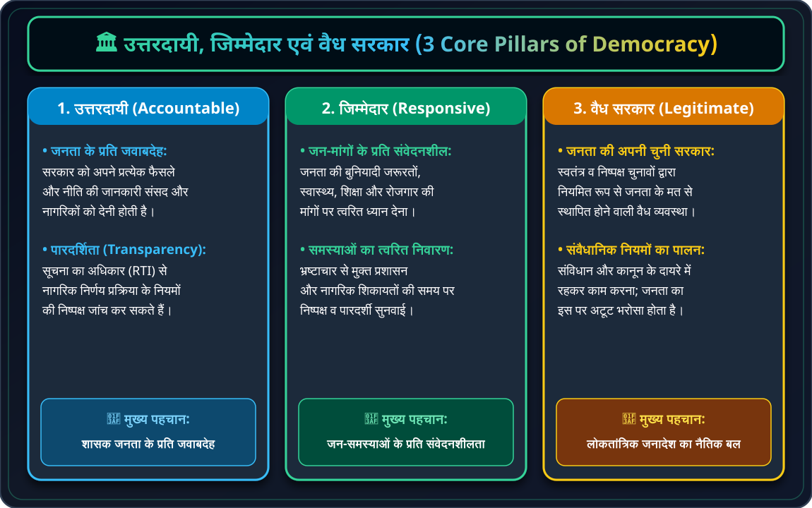
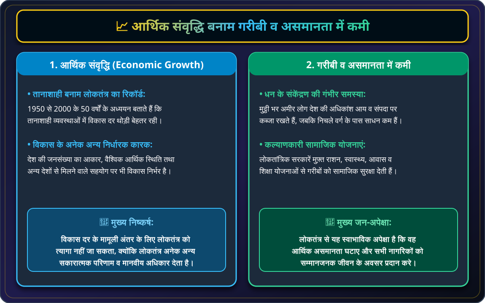
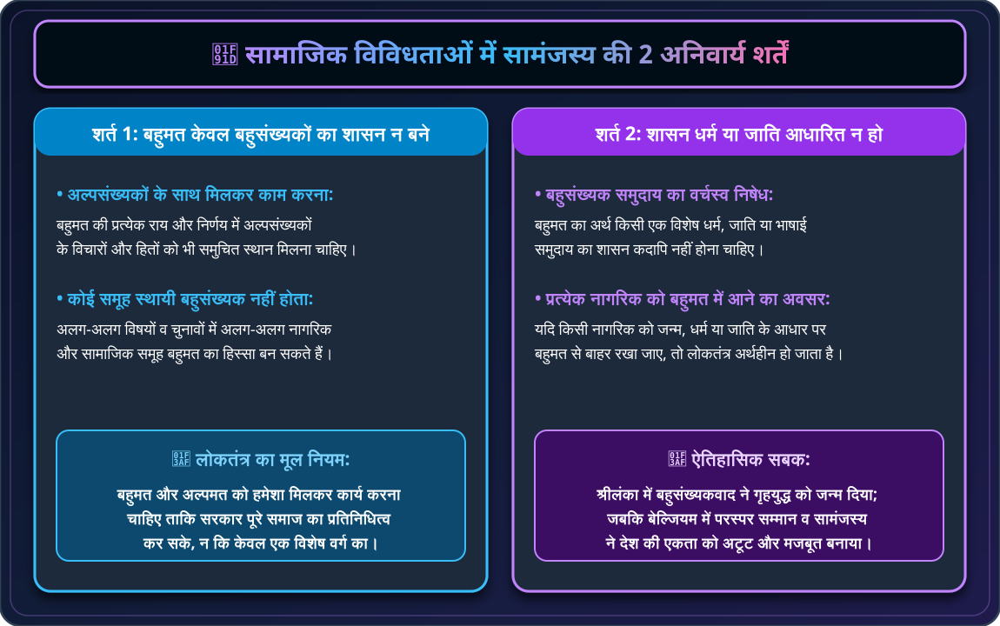
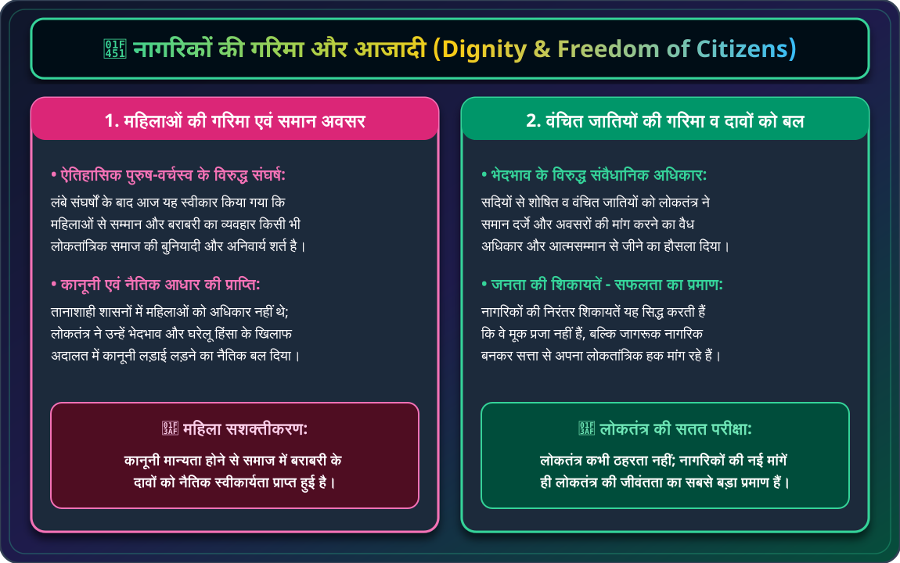

🌟 1. लोकतंत्र के परिणामों का मूल्यांकन कैसे करें?
लोकतंत्र केवल एक प्रकार की सरकार नहीं है, बल्कि यह एक मूल्य आधारित व्यवस्था है। जब हम लोकतंत्र के परिणामों का मूल्यांकन करते हैं, तो हम पाते हैं कि तानाशाही या अन्य शासन प्रणालियों की तुलना में लोकतंत्र हर पैमाने पर बेहतर सिद्ध होता है।

🌟 चार्ट 5.1: लोकतंत्र के मूल्यांकन के 5 मुख्य पैमाने (5 Evaluation Metrics)
समानता, गरिमा, बेहतर फैसले, शांतिपूर्ण सामंजस्य व गलतियां सुधारने का अवसर।
🏛️ 2. उत्तरदायी, जिम्मेदार एवं वैध सरकार
लोकतांत्रिक सरकार की सबसे पहली अपेक्षा यह है कि वह उत्तरदायी (Accountable), जिम्मेदार (Responsive) और वैध (Legitimate) हो।

🏛️ चार्ट 5.2: उत्तरदायी, जिम्मेदार एवं वैध सरकार (Accountable, Responsive & Legitimate Govt)
जवाबदेही व पारदर्शिता (RTI) + जनता की आवश्यकताओं की पूर्ति + निष्पक्ष चुनाव द्वारा चुनी वैध सरकार।
📈 3. आर्थिक संवृद्धि बनाम असमानता में कमी

📈 चार्ट 5.3: आर्थिक संवृद्धि बनाम गरीबी व असमानता में कमी (Economic Outcomes)
संवृद्धि दर की तुलना बनाम मुफ़्त शिक्षा, स्वास्थ्य व जनकल्याणकारी योजनाओं द्वारा गरीबी मिटाना।
🤝 4. सामाजिक विविधताओं में सामंजस्य

🤝 चार्ट 5.4: सामाजिक विविधताओं में सामंजस्य (Accommodation of Diversity)
बहुमत केवल बहुसंख्यकों का शासन न बने + हर नागरिक को बहुमत का हिस्सा बनने का अवसर मिले।
👑 5. नागरिकों की गरिमा और आजादी

👑 चार्ट 5.5: नागरिकों की गरिमा और आजादी (Dignity & Freedom of Citizens)
महिलाओं की गरिमा व समान अवसर + वंचित जातियों को सशक्त बनाना व कानूनी संरक्षण।
💡 परीक्षा हेतु त्वरित स्मरणीय तथ्य (Quick Exam Takeaways):
- पारदर्शिता (Transparency): नागरिक यह जान सकें कि फैसला लेने में नियमों का पालन हुआ है या नहीं।
- उत्तरदायी सरकार: जो जनता के प्रति जवाबदेह हो और फैसले सोच-समझकर ले।
- वैध सरकार: जो जनता द्वारा स्वतंत्र चुनाव के माध्यम से चुनी जाती है।
- तानाशाही बनाम लोकतंत्र: तानाशाही में संवृद्धि दर थोड़ी अधिक हो सकती है, पर स्वतंत्रता और गरिमा केवल लोकतंत्र में मिलती है।
- शिकायतें: जनता की बढ़ती शिकायतें लोकतंत्र की विफलता नहीं, बल्कि उसकी सफलता का प्रमाण हैं।